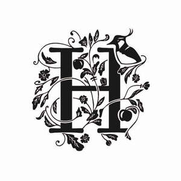

Trade Mark Journal No.2025/043 24 October 2025
UK00004277904 14 October 2025 (25,33,41,43)
Mark 1

Mark 2
Mark 3
Mark 4
Mark 5
Mark 6
- Class 25
- Aprons; baseball caps; baseball caps and hats; beach clothing; bodies [clothing]; bucket caps; caps; casual clothing; clothes; clothing; clothing for sports; footwear; headgear; jackets; jackets being sports clothing; jerseys; knitwear; leisure wear; men's clothing; parts of clothing, footwear and headgear; rainproof clothing; ready-made clothing; ready-to-wear clothing; rugby jerseys; shorts; sports caps; sports caps and hats; sports clothing; sports jerseys; tops; T-shirts; waterproof clothing; water-resistant clothing; weatherproof clothing; windproof clothing; woollen clothing.
- Class 33
- Alcoholic beverages, except beers; alcoholic preparations for making beverages; alcoholic cocktail mixes; alcoholic fruit beverages; alcoholic fruit cocktail drinks; alcoholic punches; aperitif wines; brandy; cider; cocktails; distilled beverages; distilled spirits; dry cider; gin; low-alcoholic wine; mulled wine; prepared alcoholic cocktails; prepared wine cocktails; red wine; rose wine; rum; schnapps; sparkling wine; spirits; sweet cider; vodka; whisky; white wine; wine.
- Class 41
- Education and training services relating to orchard management, the production of cider and the production of other alcoholic beverages; entertainment services; production of entertainment; musical performances; cultural activities; organisation of events for cultural, entertainment and educational purposes; providing on-line publications (non-downloadable); information, advice, and consultancy in relation to the aforementioned services.
- Class 43
- Services for providing food and drink; bar services; catering services; restaurant services; café services; cider and alcoholic beverage tasting services (provision of beverages); information, advice, and consultancy in relation to the aforementioned services.
Horneywink Limited
Representative: Adamson Jones